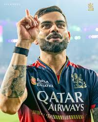

RCB
Ahead of the 2008 player auction, the IPL designated Rahul Dravid as the icon player for the Bangalore franchise. This designation ensured that Dravid would be paid 15% more than the highest bid player at the auction.[8] The franchise acquired several prominent Indian and international players,
including Jacques Kallis, Anil Kumble, Zaheer Khan, Mark Boucher,
Dale Steyn, and
Cameron White.[9] In the second round of the auction, they also signed Ross Taylor, Misbah-ul-Haq, and India under-19 World Cup-winning captain Virat Kohli.[10] The franchise named Dravid as the captain of the team and appointed Venkatesh Prasad as the head coach.[11] The team struggled in the inaugural season, winning only four out of their 14 matches and finishing seventh in
the eight-team table.[12] Dravid was the sole player to score more than 300 runs in the tournament, and the team even had to bench their most expensive foreign player, Kallis, for several matches due to his poor form.[13][14] Midway through the season, the string of failures led to the sacking of CEO Charu Sharma, who was replaced by Brijesh Patel. Mallya publicly criticised
Dravid and Sharma for their selection of players at the auction, stating that his "biggest mistake was to abstain from the selection
of the team."[15] Eventually, the chief cricketing officer of the franchise, Martin Crowe, resigned and Prasad was replaced by Ray Jennings as the head coach.[16]

jersey
The Royal Challengers Bengaluru (RCB) jersey is one of the most iconic and stylish kits in the Indian Premier League. Traditionally featuring a striking combination of red and black, the jersey symbolizes passion, power, and aggression—traits that define the spirit of the team. Over the years, RCB has introduced various editions of the jersey, including special gold-accented
designs and sustainable eco-friendly versions made from recycled materials. The jersey proudly displays the team's lion crest and is adorned with the logos of major sponsors. Worn by some of the biggest names in cricket, including Virat Kohli, AB de Villiers, and Faf du Plessis, the RCB jersey is more than just a uniform—it's a symbol
of loyalty, energy, and the unwavering support of the RCB fanbase, also known as the "12th Man Army."
TO ORIGINAL WEBSITE
- RCB
- SRH
- LSG